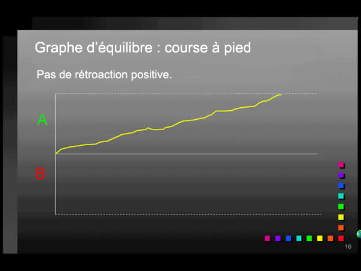
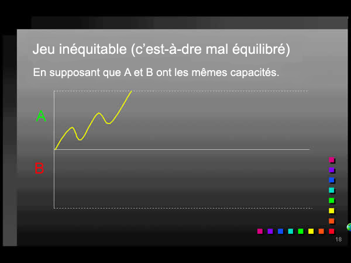
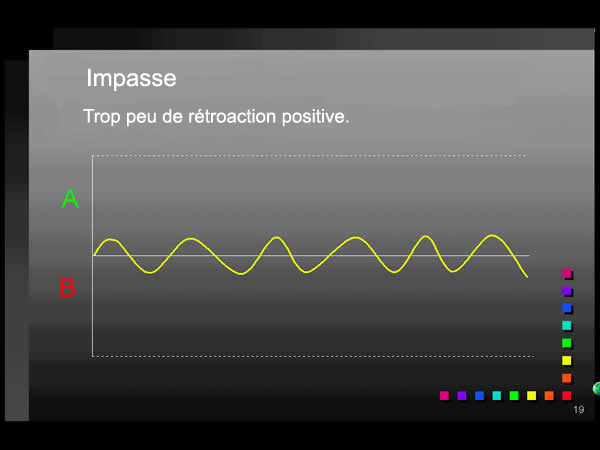
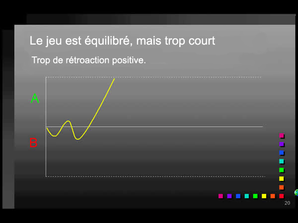
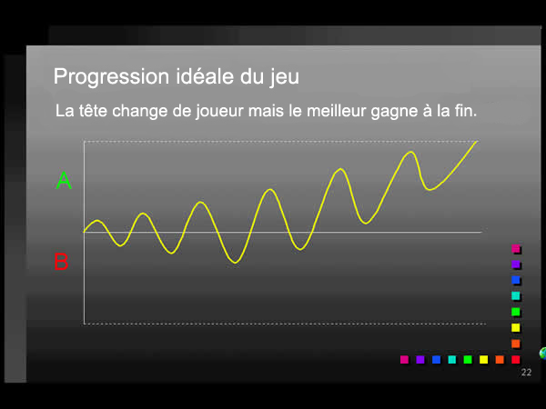
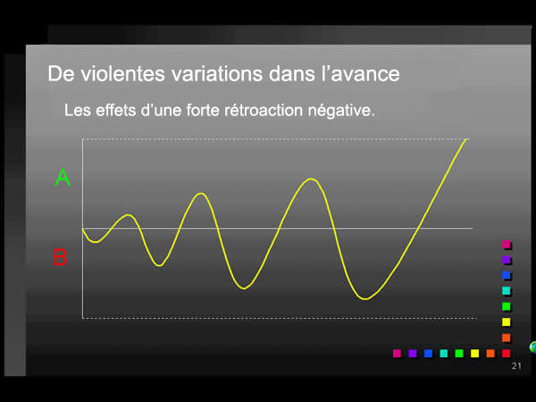

Equilibrer les jeux grâce à la rétroaction positive
L'article original est écrit par Ernest Adams publié par Gamasutra (janvier 2002).
L'auteur original n'est en aucun cas reponsable de la précision de cette traduction.
La plupart du temps, cette chronique est remplie de notes dogmatiques sur la créativité, la narration ou les effets sociologiques du divertissement interactif – en d’autres termes, la pluie et le beau temps. De temps à autres néanmoins, je me sens obligé d’écrire quelque chose d’abstrus et de technique sur le game design, quelque chose qui relève plus du « comment » plutôt que du « pourquoi » ou du « pourquoi-ne-pas ». Là il s’agit de l’un de ces moments. Ce mois-ci, je vais vous parler des effets que la rétroaction positive a sur l’équilibre d’un jeu.
Qu’est-ce que la rétroaction positive ?
Quand nous parlons de feedback (NdT : c’est ce mot que nous traduisons dans le reste de l’article par rétroaction) dans la vie de tous les jours, nous faisons habituellement référence à cet horrible grésillement qui se produit chaque fois qu’un micro dans un système de sonorisation se trouve trop près de l’un des haut-parleurs (NdT : c’est ce qu’on appelle l’effet Larsen). Le micro récupère tout ce qui sort des haut-parleurs et essaye de l’amplifier à nouveau. De façon plus générale, une rétroaction intervient chaque fois que la sortie d’un système est aussi connectée au système sous la forme d’une entrée. Ce qui intervient avec le micro et le haut-parleur est un exemple de réaction positive – une situation qui tend à amplifier ce qui sort du système
Bien qu’on n’entende pas beaucoup de concepteurs en parler, la rétroaction positive joue un rôle important dans le game design. Elle peut gravement nuire à un jeu si c’est mal implémenté, mais elle a aussi des avantages significatifs. C’est un élément de game design que tout concepteur doit comprendre et apprendre à utiliser.
Avant que je ne m’occupe de son fonctionnement, regardons une minute la façon dont on perd ou on gagne dans les jeux. Quand vous arrivez devant deux de vos amis en train de jouer à un jeu, quelle est la première chose que vous dîtes ? « Qui est-ce qui gagne ? », bien évidemment. Il ne s’agit pas toujours d’une question simple. Certains jeux ont une métrique qui détermine qui est en tête à n’importe quel moment ; d’autres non. Au ping-pong par exemple, c’est évident : celui qui a le plus de points est en train de gagner. Aux échecs, c’est beaucoup moins clair, parce que la condition de victoire – coincer le roi de toutes parts – n’est pas définie en termes de points accumulés. Vous pouvez dire de façon très approximative que c’est celui qui a pris le plus de pièces qui est en train de gagner, mais il est parfaitement possible de gagner aux échecs avec moins de pièces que l'adversaire n’en a.
Pour ce qui est game design, on peut parler de rétroaction positive chaque fois que la réalisation d’un objectif rend les objectifs suivants plus faciles à réaliser. En d’autres termes, chaque fois que quelqu’un gagne quelque chose dans un jeu, cela devient plus facile de gagner. Si le rôle de la rétroaction positive est trop important, alors celui qui obtient le premier un avantage, aussi petit qu’il soit, dans le jeu a la garantie de gagner, parce que celui ne va pas cesser de s’amplifier. Ceci donne l’impression que la rétroaction positive est à éviter, mais ce n’est pas le cas ; la question est juste de l’employer correctement.
La rétroaction positive apparait principalement dans les jeux où la condition de victoire est définie en termes numériques et dans lesquels vous travaillez tout au long du jeu à remplir cette condition de victoire en accumulant quelque chose. Dans le Monopoly, par exemple, c’est l’argent. Obtenir de l’argent vous permet d’acheter et d’améliorer des propriétés, ce qui permet de gagner plus d’argent. La rétroaction positive apparait aussi dans des jeux où une certaine sorte d’avantage numérique permet de remplir une condition de victoire non numérique. Bien que la condition de victoire aux échecs soit non-numérique, cela aide généralement d’avoir plus de pièces que votre adversaire.
Graphes d’équilibre
Alors, quels sont les effets d’une rétroaction positive sur les jeux ? Je pense qu’il est utile de jeter un œil à ce que j’appelle un graphe d’équilibre, bien qu’il existe probablement un nom différent pour cela dans la théorie formelle des jeux. J’en ai inclus plusieurs ci-dessous. Un graphe d’équilibre représente l’évolution d’un jeu à deux joueurs de somme nulle. Le temps est représenté par l’axe horizontal. L’axe vertical indique qui est en tête selon une certaine métrique numérique, habituellement la différence de points entre les deux joueurs. Si le joueur A est en tête, le nombre est positif ; si le joueur B est en tête, il est négatif. Tout à gauche du graphe se trouve le début du jeu, les deux joueurs sont ex-æquo. Les lignes en pointillés en haut et en bas du graphe indiquent les conditions de victoire pour les joueurs A et B.

Mon premier graphe d’équilibre représente une simple course de sprint, dans laquelle le joueur A est un meilleur coureur que le joueur B. A part immédiatement en tête et y reste pour toute la durée de la course. Les courses en ligne droite n’ont pas de rétroaction positive. Être en tête ne rend pas plus facile le fait de conserver ou d’augmenter son avance (en fait, certains faits psychologiques suggèrent que c’est plutôt le contraire qui est vrai : les coureurs essayent plus fort s’il y a quelqu’un juste devant eux. Quand Roger Bannister s’entrainait pour battre le record d’un mile en quatre minutes, il s’entrainait avec des meneurs qui couraient juste devant lui. Ce phénomène a aussi été observé dans des courses de chevaux et de chien de traineaux. Néanmoins, ceci ne fait pas partie des règles du jeu, c’est-à-dire de ce qui nous intéresse ici.)

Ce graphe est un exemple de jeu non équilibré, id est inéquitable – qu’il fasse appelle à une rétroaction positive ou pas. Si on suppose que A et B ont les mêmes capacités et qu’il n’y a pas d’élément lié à la chance qui intervienne, quelque chose dans les règles donne à A un avantage, de telle sorte qu’il prend la tête et maintient son avance tout au long d’un jeu très court.

Ici, nous avons une impasse, un jeu qui continue éternellement sans que ni l’un ni l’autre des joueurs n’arrive à garder la position dominante. C’est un jeu trop équilibré : aucun des deux joueurs n’est capable d’atteindre la victoire. Le jeu de cartes pour enfants La Bataille est un bon exemple de cette sorte de jeu : tout repose sur la chance, rien sur les compétences et il n'y a pas de rétroaction positive. Ceci montre pourquoi la rétroaction positive est une chose utile : elle permet d’empêcher ce genre d'impasses. Une fois qu’un joueur a suffisamment gardé la tête, l’avantage que lui confère la rétroaction positive garantit qu’il va gagner.

La figure 4 représente un jeu qui est équilibré, mais où la rétroaction positive intervient trop tôt, ce qui aboutit à un jeu équitable mais très court. B obtient un léger avantage, puis A reprend une courte avance, puis B à nouveau, puis A garde l’avance plus longtemps et gagne rapidement le jeu.

Le jeu idéal, selon moi, commence de façon équilibrée, mais devient lentement déséquilibré avec le temps, jusqu’à ce que l’un des joueurs gagne inévitablement – si possible le meilleur joueur ! La figure 5 en montre un exemple, bien que dans ce cas, le joueur B combatte vaillamment pour un assez long moment.
Une fois que l’avance d’un des joueurs devient suffisante, le jeu ne devrait pas mettre trop de temps à se terminer. C’est l’un des (très rares) problèmes du Monopoly. Entre le moment où il est clair que l’un des joueurs va gagner et celui où il a effectivement conduit les autres joueurs à la banqueroute, il s’écoule une demi-heure ou plus. Les autres joueurs n’ont plus qu’à rester assis et attendre tout du long de leur lente descente vers la faillite.
La rétroaction positive dans les jeux
Maintenant, regardons quelques exemples de jeux avec et sans rétroaction positive. Comme je l’ai mentionné précédemment, les courses et la plupart des autres compétitions sportives ne font pas intervenir de rétroaction positive – du moins, il n’y en a pas qui soit voulue par les règles. De même, la plupart des jeux de cartes non plus : le cribbage (NdT : jeu de cartes sans équivalent en français) et le rami, par exemple. D’autre part, les jeux de guerre font très nettement intervenir la rétroaction positive, particulièrement si la condition de victoire est simplement d’éradiquer toutes les unités des autres joueurs. Détruire une unité ennemie confère un avantage au joueur qui le fait. L’unité n’est plus là pour contre-attaquer, il est donc plus simple de détruire l’unité suivante et ainsi de suite.
Un autre genre de jeux vidéo qui fait intervenir la rétroaction positive est le jeu de rôle à un seul joueur. Vous commencez avec de mauvaises armes, vous tuez des monstres, vous récupérez de l’or et vous l’utilisez pour acheter de meilleures armes. Ces nouvelles armes vous permettent de tuer plus de monstres, de récupérer plus d’or, d’acheter des armes encore meilleures et ainsi de suite.
La rétroaction positive n’a pas besoin d’avoir une influence directe sur la façon de gagner ; cela peut tout aussi bien apparaitre dans d’autres domaines du jeu. Lorsque j’étais chez Bullfrog Productions, j’étais lead designer sur un nouveau jeu (jamais sorti, hélas) appellé Genesis : The Hand of God. Genesis était un god game dans l’esprit du Populous original de Bullfrog dans lequel vous pouviez affecter le ciel d’une région avec un pouvoir divin, en utilisant la mana généré par vos fidèles. L’une de nos innovations était qu’il y avait différents types de mana, qui dépendaient du terrain sur lequel vivaient vos fidèles. Par exemple, s’ils vivaient sur un terrain humide vous aviez beaucoup de mana d’eau, que vous pouviez utiliser pour faire pleuvoir. Bien sûr, nous nous sommes rendus compte immédiatement qu’il y avait là une boucle de rétroaction positive : plus vous aviez d’eau, plus vous pouviez obtenir d’eau. D’autre part, si votre peuple vivait dans le désert, il était très difficile de faire pleuvoir parce que vous produisiez très peu de mana d’eau.
Finalement, nous avons conclu que ce n’était pas un problème pour le jeu. Faire pleuvoir dans une zone humide la rend plus humide, et alors ? Si vous faisiez pleuvoir tout le temps, vous noyiez votre propre peuple et il n’y avait pas d’avantage à faire cela. Nous avons aussi pensé que faire fleurir le désert ne serait pas facile au départ, mais qu’une fois commencé, cela deviendrait plus facile. Bien qu’il s’agisse de rétroaction positive, cela ne mettait pas l’équilibre du jeu en danger, parce que cela ne vous conférait pas un avantage direct sur vos opposants.
Contrôler la rétroaction positive
Jusqu’ici, j’ai regardé à la fois les avantages et les dangers de la rétroaction positive. L’avantage est d’empêcher les impasses et de permettre au jeu d’arriver à une conclusion. Le danger est de déséquilibrer le jeu trop rapidement et de l’amener à se finir trop vite. Alors comment pouvons nous limiter la rétroaction positive ? Il y a plusieurs moyens de le faire.
Utiliser la rétroaction négative
La rétroaction négative est l’opposé de la rétroaction positive ; c’est un effet qui tend à diminuer et non à amplifier la sortie d’un système. Un bon exemple de l’utilisation de la rétroaction négative est la façon dont la sélection des joueurs fonctionne dans le football américain professionnel. En général, une équipe qui gagne beaucoup aura beaucoup plus d’argent qu’une équipe qui perd beaucoup. Une équipe gagnante pourrait utiliser cet argent pour surenchérir sur les autres équipes et engager les meilleurs nouveaux joueurs qui arrivent du lycée. Les meilleurs équipes gagnent plus d’argent, ce qui leur permet d’engager les meilleurs joueurs, et ainsi elles continuent à gagner. Les équipes pauvres ne peuvent s’offrir que de mauvais joueurs, et continuent donc à perdre – un exemple clair de rétroaction positive.
De façon à empêcher ceci et à essayer d’équilibrer la force de toutes les équipes, la National Football League a introduit un système de recrutement. Les nouveaux joueurs ne peuvent pas juste se proposer aux enchères et être achetés par les plus offrants ; au lieu de cela, les équipes prennent des tours pour choisir des joueurs parmi ceux disponibles, et, ce qui est plus important, les pires équipes choisissent en premier. Ceci signifie que les pires équipes ont la priorité pour le choix des meilleurs joueurs et la qualité des équipes est ainsi nivelée d’une certaine façon. Bien sûr, ce n’est pas aussi simple en pratique ; les équipes sont autorisées à échanger leurs positions dans l’ordre de sélection et la qualité de leur jeu dépend beaucoup de la qualité de leur entrainement, sans parler des autres joueurs qui sont déjà dans l’équipe. Mais le principe est bon. Le système de recrutement aide à empêcher qu’une équipe se maintienne dans une position d’invincibilité grâce à la rétroaction positive.

Soyez néanmoins prudent avec la rétroaction négative – si elle est trop forte, elle peut aboutir à des impasses ou même des oscillations brusques dans la domination du jeu, comme l’illustre cette figure. Dans cet exemple, prendre la tête confère un désavantage fort ce qui permet à l’autre joueur de prendre la tête et ainsi de suite.
On voit souvent cela dans les jeux multijoueurs au tour par tour pour adultes, où le but n’est pas vraiment de récompenser la maitrise du jeu, mais de passer un bon moment sans trop s’occuper de qui est sur le point de gagner. Tout le monde parvient à être en tête à un moment ou à un autre et qui est le vainqueur est principalement une question de chance.
Limiter le bénéfice apporté par la rétroaction positive
Aux échecs, cela aide évidemment beaucoup d’enlever l’une des pièces de votre adversaire du plateau. Mais imaginez comment seraient les échecs si pouviez, non pas simplement ôter la pièce, mais en faire l’une des vôtres. Prendre une pièce adverse vous confèrerait alors un bien plus grand avantage, en d’autres termes, une plus forte rétroaction positive. Les parties d’échecs seraient plus courtes. Ceci se produit effectivement dans les échecs japonais, qui sont appelés shogi. Un joueur qui a ôté l’une des pièces adverses du plateau peut la réintroduire plus tard comme l’une des siennes (avec certaines restrictions).
C’est pourquoi la plupart des jeux de stratégie en temps réel ne vous autorisent pas à prendre les unités ennemis et à les utiliser comme les vôtres, ni ne vous autorise à vous emparer des dispositifs de production adverses. Si vous pouviez mettre la main sur les usines de votre adversaire et commencer à y fabriquer des unités pour votre compte, le jeu ne durerait pas très longtemps. Il s’agit d’une limitation de l’avantage apporté par la rétroaction positive.
En plus du processus de recrutement, le football américain professionnel dispose d’autres règles qui aident à empêcher les équipes les plus riches de dominer toutes les autres année après année. L’une d’entre elle est la restriction des salaires, qui limite la somme totale que peut dépenser chaque équipe pour payer ses joueurs. Peu importe combien d’argent l’équipe a, elle ne peut pas en dépenser plus pour les salaires que ce que fixe cette règle. Une autre règle fixe la taille des équipes. Aucune équipe ne peut avoir plus de cinquante-trois joueurs durant la saison de jeu régulière, même si elle peut se le permettre financièrement. Ces restrictions artificielles servent à contenir les effets de la rétroaction positive. Dans les faits, elles permettent de s’assurer que « l’argent ne fait pas tout ».
Définir la victoire en d’autres termes
Comme je l’ai mentionné précédemment, la condition de victoire n’a pas besoin d’être définie en termes directement influencés par la rétroaction positive. Aux échecs, la victoire est définie en termes stratégiques plutôt que numériques. Dans les jeux de stratégies en temps réels, vous pouvez créer des missions dans lesquelles la victoire doit être atteinte furtivement, ou bien en détectant une certaine faiblesse dans les défenses ennemies, ou bien en survivant un certain laps de temps, ou bien de nombreux autres scénarios. L’une des faiblesse des RTS en ce moment est que trop d’entre eux reposent sur le principe de submerger l’ennemi avec d’énormes effectifs – dans les faits, l’efficacité de la production – plutôt que sur celui de récompenser les compétences stratégiques. Ceci conduit à une mentalité « chair à canon » chez les joueurs qui rappelle désagréablement Field Marshal Haig dans la Somme (NdT : un commandant anglais surnommé le « Boucher de la Somme » pour le nombre de morts dans ses rangs lors de la Première Guerre Mondiale). Espérons qu’ils ne s’entrainent pas avec ce genre de jeux à West Points (NdT : l’une des deux plus prestigieuses écoles militaires des États-Unis).
Augmenter la difficulté pour compenser
C’est exactement ce que font les jeux de rôle. Comme je l’ai décrit plus haut, il y a clairement une rétroaction positive dans l’évolution du personnage : gagner des batailles vous permet d’acheter de meilleures armes qui vous permettent de gagner encore plus de batailles. Si vous faisiez toujours face à la même sorte d’ennemis, vous deviendriez rapidement invincible, et le jeu ne serait pas vraiment très difficile. En conséquence, à mesure que la force et les compétences de votre personnage se développent, le jeu augmente aussi la résistance de vos ennemis. La difficulté à gagner chaque combat reste à peu près constante (avec des variations locales) tout au long du jeu.
Augmenter l’influence de la chance
Ce n’est pas la meilleure façon de réduire les effets de la rétroaction positive, mais ça marche. Le Monopoly le fait d’une certaine façon. Un mauvais lancer de dés peut faire régresser le joueur en tête de façon significative. Bien sûr, ceci peut faire autant de mal que de bien, à moins que vous ne pipiez les dés contre le joueur en tête – et si vous le faites, vous feriez mieux de ne pas leur en parler ! Les jeux pour enfants ont tendance à utiliser la chance plus que les jeux pour adultes. Ceci permet d’équilibrer les différences de maitrise et permet au perdant de blâmer la malchance plutôt que le lui-même (je ne cautionne pas nécessairement ceci, je ne fais que le remarquer).
Conclusion
Équilibrer un jeu vidéo à un joueur est un peu différent d’en équilibrer un à plusieurs joueurs. Dans un jeu à un seul joueur, il n’est pas nécessaire d’être « équitable » de la même façon que dans un jeu à plusieurs joueurs. Le défi dans les jeux de stratégie temps réel à un seul joueur et les jeux de rôle repose plus sur l’ignorance du joueur sur ce qui s’oppose à lui que sur les compétences de stratégie et de gestion de l’ordinateur – souvent parce que l’ordinateur n’en a pas tellement. Mais la plupart des RTS sont conçus avec des modes multijoueurs de nos jours et dans ces cas, il est nécessaire de les équilibrer proprement et de faire en sorte que vous êtes juste avec chaque joueur, tout particulièrement s’ils disposent de forces asymétriques. En mode multijoueur, la rétroaction positive a un rôle important à joueur. Utilisez la avec sagesse !
Ajouter un commentaire
Commentaires

super article, rien a redire, franchement parfait! un grand bravo!!!
--mushroom